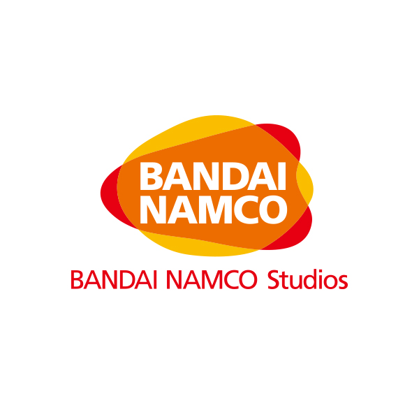

Sobre o site
|
Hidetaka Miyazaki Criador |
Bandai Nanco Distribuidora |
Felipe Jun 
Criador do site |
A silver studios tem o orgulho de lhes apresentar seus maravilhosos produtos, feitos a mão, com materíais leves de ótima qualidade. Os produtos são réplicas, usados por cosplayers, ou para decoração.
A criação de nossa loja se deu por uma parceria com a Bandai Nanco, com o auxilio do criador dos jogos souls-like, Hidetaka Miyazaki, por gostarem de nosso trabalho.
Dark souls
Dark Souls é um jogo eletrônico de RPG de ação desenvolvido pela FromSoftware e publicado pela Namco Bandai Games. Lançado originalmente em setembro de 2011 para PlayStation 3 e Xbox 360, é um sucessor espiritual de Demon's Souls e a segundo título da série Souls. Dark Souls se passa no reino fictício de Lordran, onde os jogadores assumem o papel de um personagem morto-vivo amaldiçoado que inicia uma peregrinação para descobrir o destino de sua espécie. Um relançamento para Microsoft Windows foi realizado em agosto de 2012, com conteúdos adicionais não presentes em suas versões originais. Em outubro de 2012, um novo conteúdo para download foi disponibilizado para a versão de consoles, sob o subtítulo Artorias of the Abyss.Este site foi feito para ser avaliado pelo professor Fábio para o bacharelado de ciência da computação, em programação web.